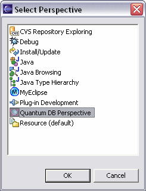
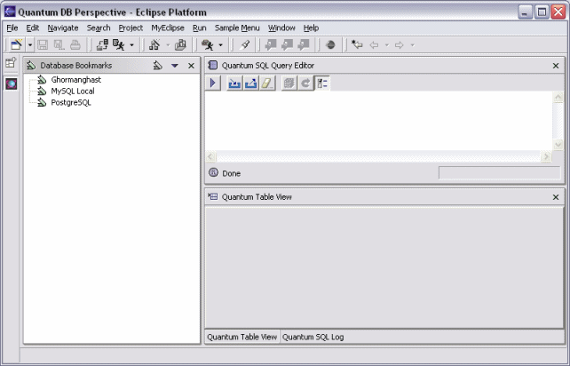

Typically, the first thing you do with the Quantum plug-in is to open the Quantum DB Perspective.
Go to Window -> Open Perspective -> Other... to get the "Select Perspective"
dialog.
Choose the "Quantum DB Perspective" option from the list:
The Quantum DB Perspective looks like this:
The first time you open the Quantum DB perspective, you won't see any bookmarks defined. Bookmarks are the reference points that you define to connect to your database. So the next step would be to define the bookmarks you need.
In some cases (specially if you are using Quantum as a part of a larger distribution),
you could find some bookmark already defined the first time you enter. The default
bookmark file is stored in a directory defined in the Quantum preferences. The
file is called def_bookmarks_win32.xml, or def_bookmarks_linux.xml,
or def_bookmarks_solaris.xml, etc, depending on the Operating System
to which applies.